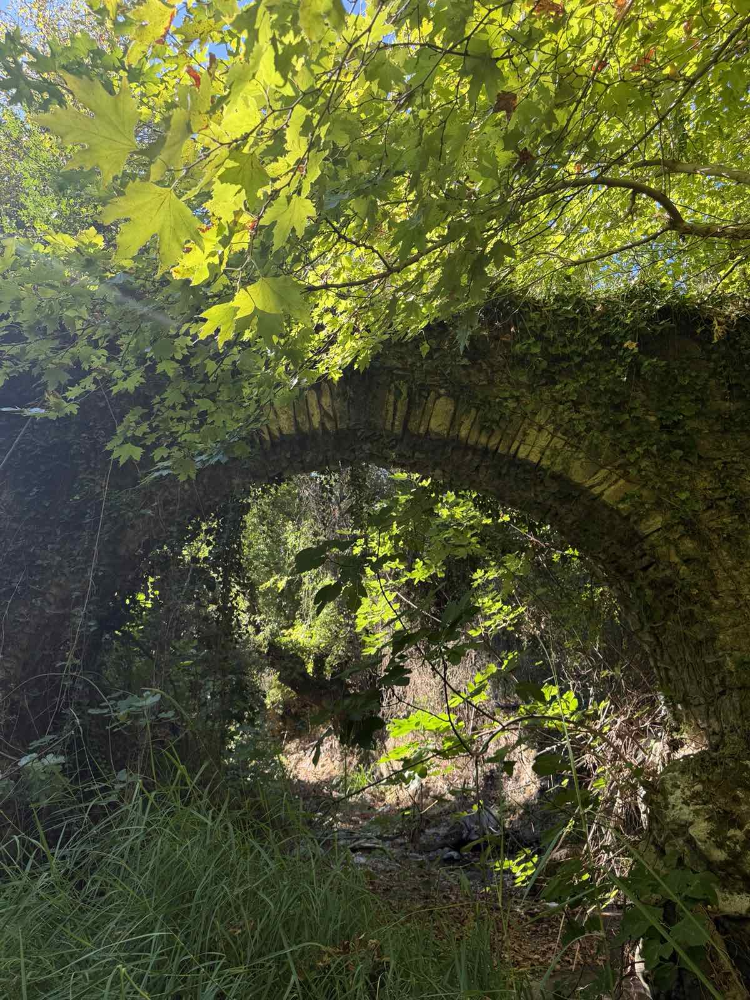
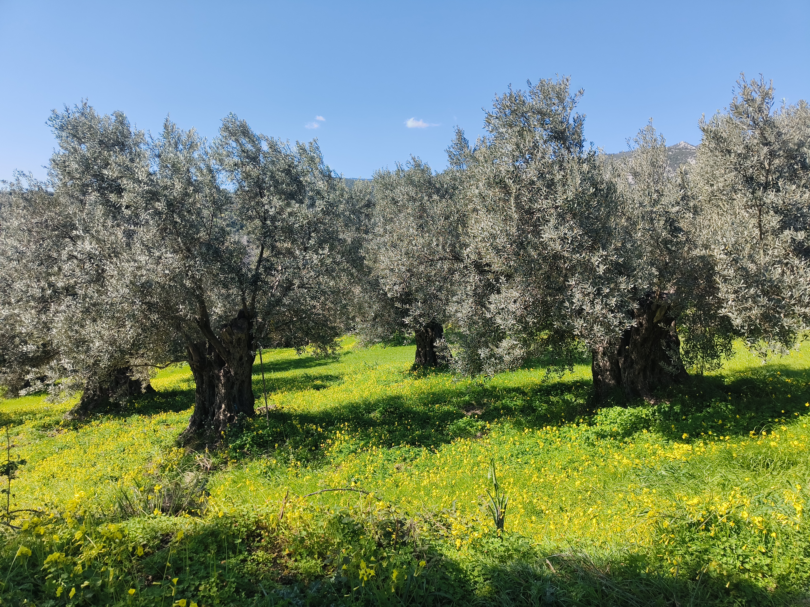

Named after a bridge.
"Kamaraki" got its name from an old stone arched bridge in the area — a small arch that connected roads and people in Mentouli, Kymi. Our farm does much the same today: it connects the land to your table.


Olive groves, orchards and a hillside garden.
Our 2 acres in Mentouli are planted with olive trees, fruit trees and a vegetable garden on sloping ground, plus potatoes. The soil is calcareous and alkaline, so we work with it rather than against it, choosing varieties and methods suited to Evia.
Kamaraki began when Elena & Costas left Athens to acquire this hillside plot in 2022. Today we look after the trees and the garden by hand, and everything we sell is picked, cooked and jarred by us.
From harvest to jar.
We pick fresh and offer fresh. Whatever is left becomes spoon sweets, jams or chutney, prepared in small batches.
Only what's ripe
We pick whatever ripens on the farm that week. Nothing is brought in from elsewhere.
Recipes passed down the family
Our spoon sweets and jams are cooked slowly, in small batches, from recipes tried, tested and trusted through generations.